Описание процесса установки кассового программного обеспечения GBS.Market
Скачивание
Скачать актуальную версию кассовой программы можно на странице Скачать.
Стандартный файл установки содержит в себе необходимые для работы программы компоненты, которые будут установлены вместе с программой.
Запуск установщика
Для установки программы необходимо запустить установку из ранее скачанного файла.
Файл может выглядеть следующим образом.
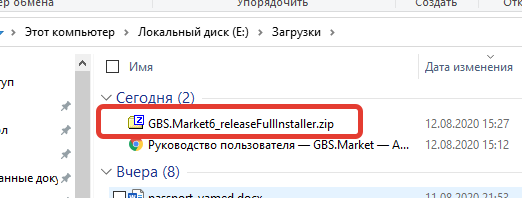Откройте архив, дважды кликнув на него. Вы увидите его содержимое
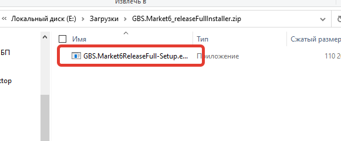Кликните дважды на файл внутри архива, чтобы начать установку.
Подтвеждение запуска установки
В некоторых случаях ОС Windows может показывать дополнительные предупреждения и запрашивать подтверждение на установку программы.
Вирусов нет Мы производим проверку загружаемых на наш сайт файлов и подписываем цифровой подписью наши установщики, чтобы гарантировать безопасность файлов.
SmartScreen
SmartScreen – это система защиты от нежелательного программного обеспечения. В некоторых случаях защита может сработать даже тогда, когда файл безопасен.
В случае, когда такая защита срабатывает, появляется окно
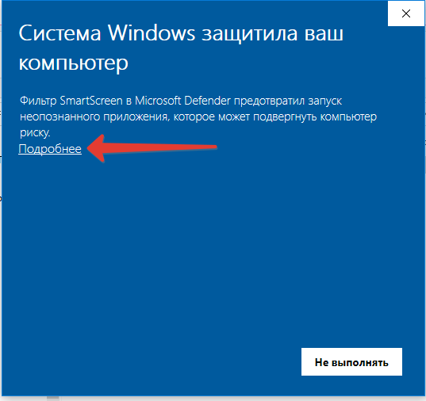Нажмите на “Подробнее”, чтобы отобразить кнопку запуска:
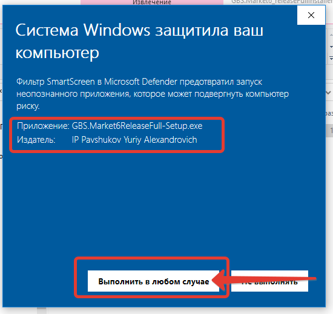В окне вы увидите информацию об издателе. Если издатель указан как IP Pavshukov Yuriy Alexandrovich, значит файл подписан и не представляет угрозы для компьютера.
Нажмите “Выполнить в любом случае”, чтобы продолжить установку.
Контроль учетных записей (UAC)
Система контроля учетных записей обеспечивает дополнительную безопасность в Windows, не позволяя устанавливать программное обеспечение, если у пользователя недостаточно прав.
В зависимости от настроек может появиться окно для подтверждения запуска установки
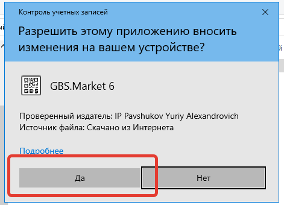В данном окне также отображается информация об издателе.
Нажмите “Да”, чтобы продолжить установку.
Установка программы
После запуска установщика действуйте подсказкам мастера установки.
На первой странице нажмите “Далее”
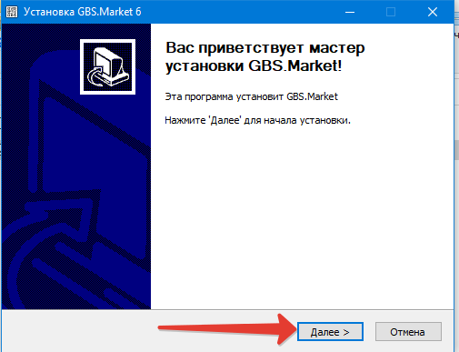Далее ознакомьтесь с текстом пользовательского соглашения и договором – оферты.
Если вы принимаете условия, нажмите “Принять”
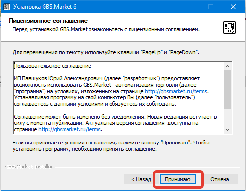На следующей странице вы можете указать папку, в которую будет установлена программа или оставить папку по умолчанию.
Нажмите “Далее”.
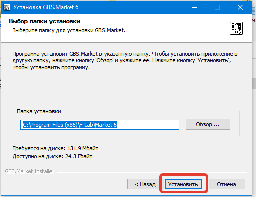Начнем процесс установки GBS.Market. Процесс может занять несколько минут, в зависимости от производительности компьютера и наличия необходимых компонентов.
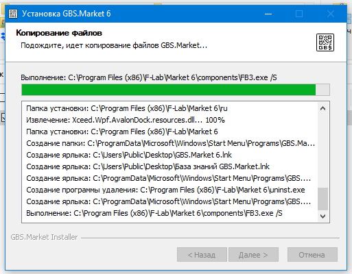После завершения установки нажмите кнопку “Готово”
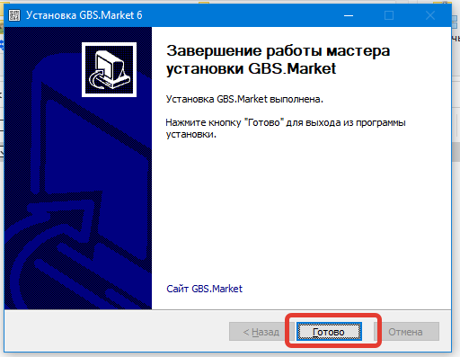Ярлыки
В процессе установки на рабочем столе будут созданы ярлыки для запуска кассовой программы и ссылка на базу знаний.
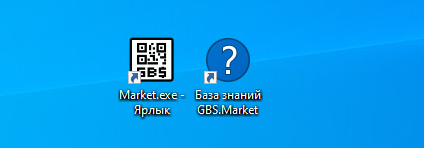